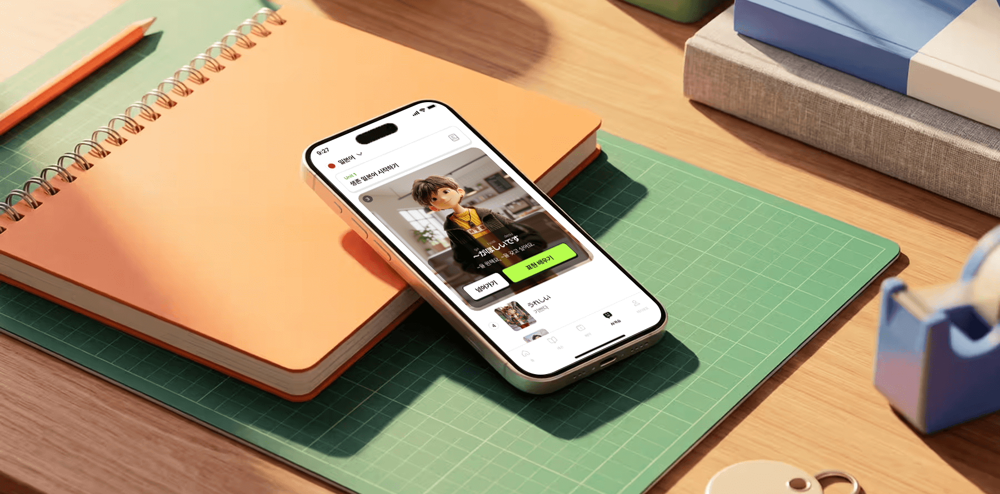
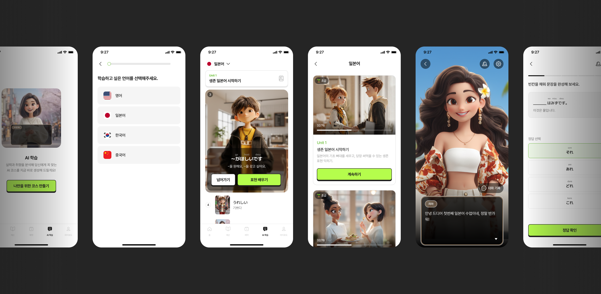
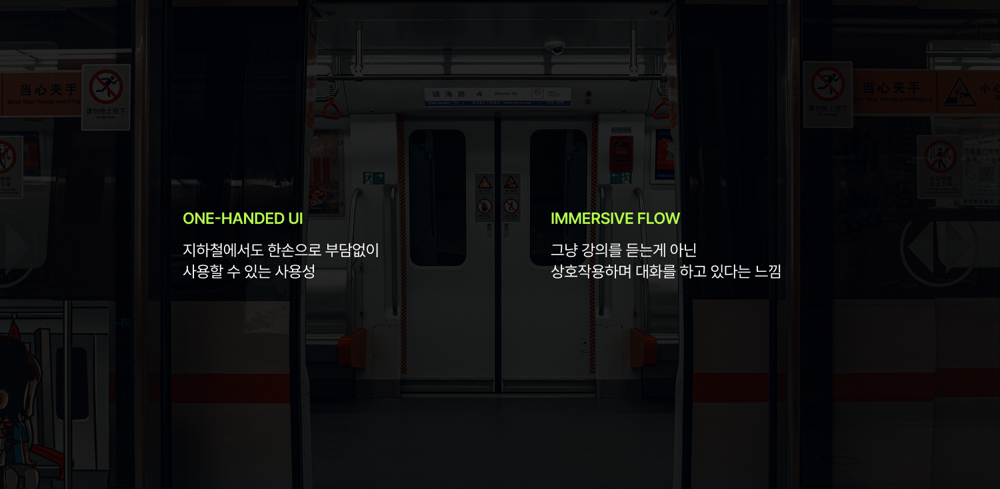
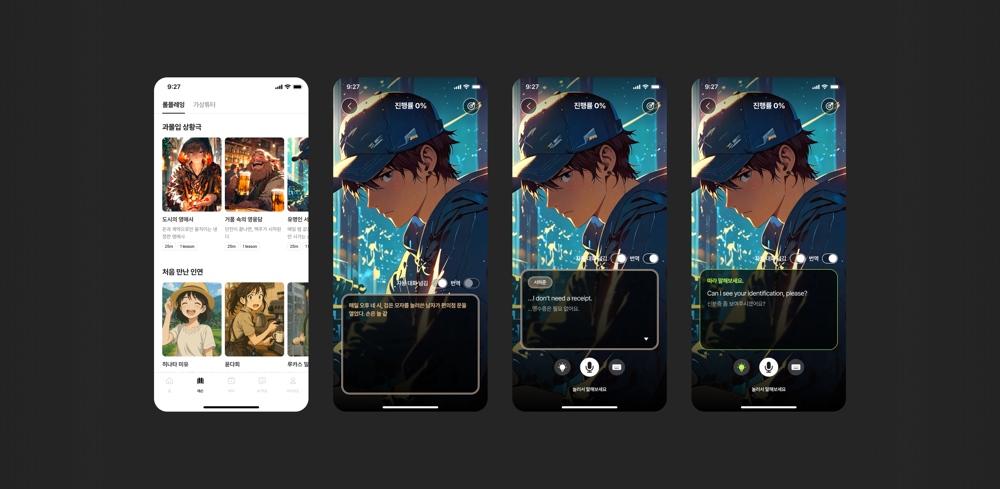
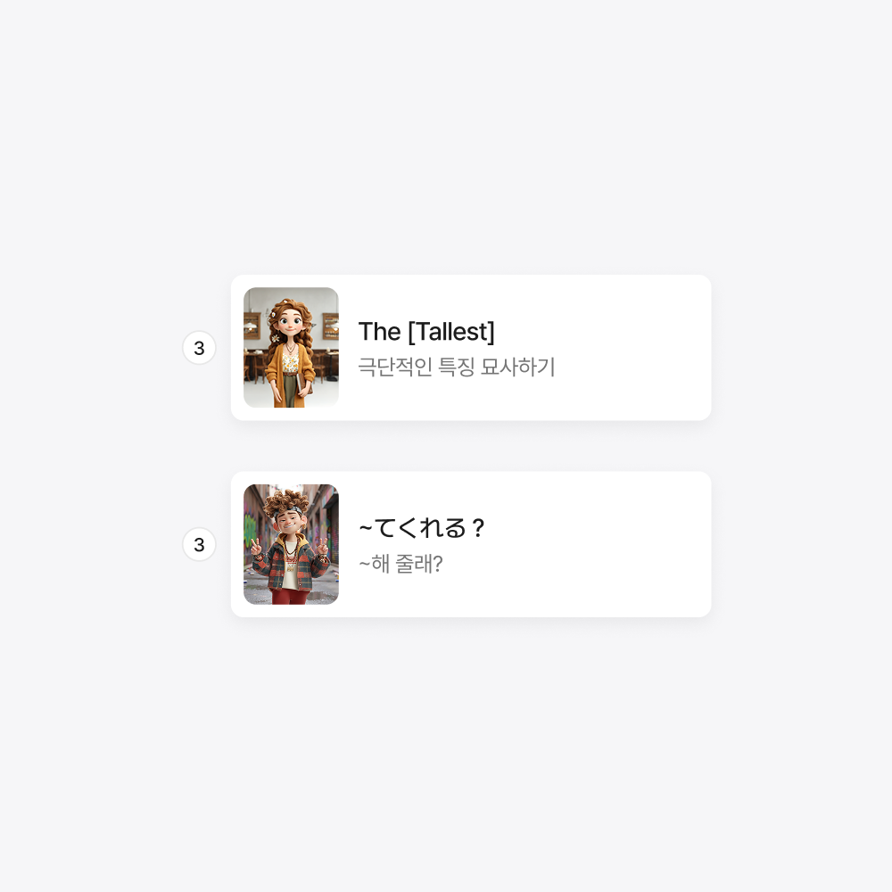
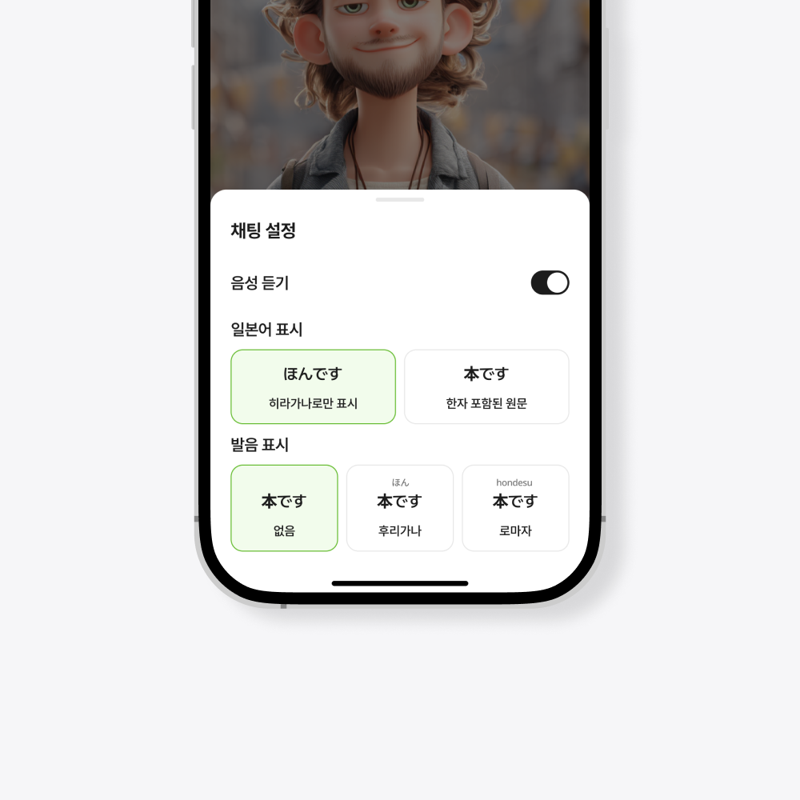
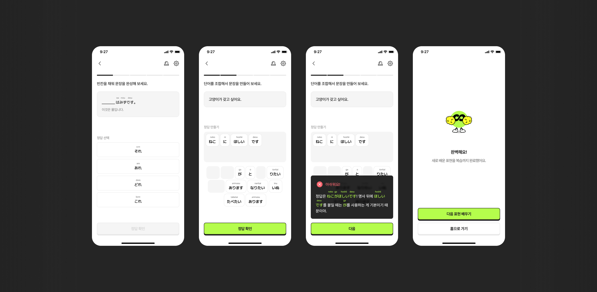
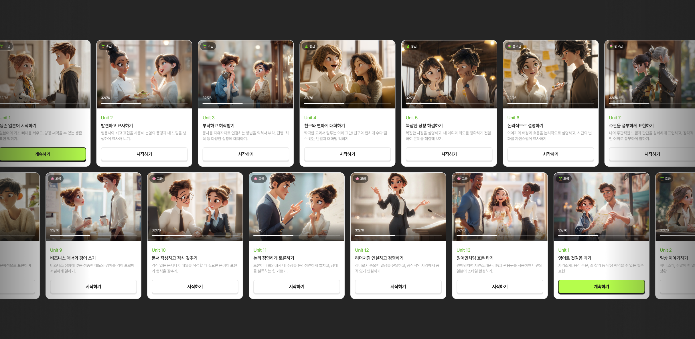
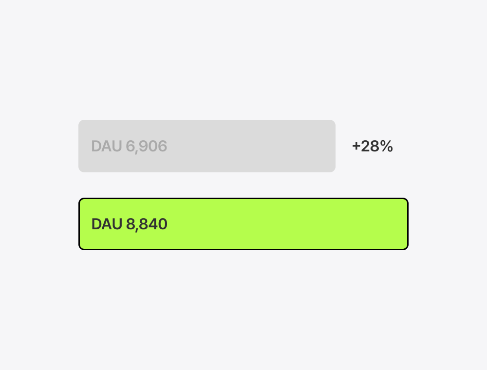
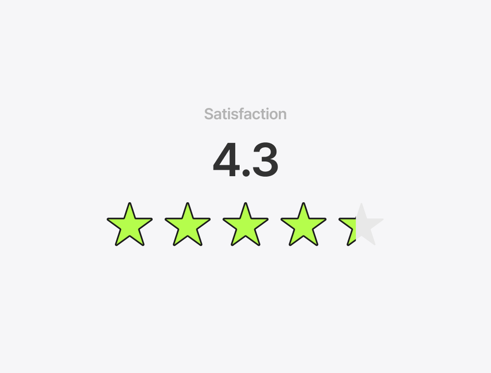

Podo Podolingo
Podo 앱 내 AI 기반 표현 학습 기능입니다. 지하철이나 이동 중에도 한 손으로 쉽게 쓸 수 있고, 말하기가 두려운 초보 학습자도 부담 없이 시작하는 데 초점을 맞췄습니다.

수업이 끝나면 열 이유가 없는 앱
포도는 원어민과 1:1 화상 수업을 예약하고 받는 앱입니다. 예약한 시간에 들어와서 수업을 받고 나가는 게 전부였고, 수업 시간 외에는 앱에 접속할 이유가 없었습니다. DAU와 리텐션이 수업 일정에 완전히 종속돼 있었고, 앱을 열지 않는 사이 학습 동기는 식고, 다음 수업 예약을 미루다가 이탈하는 패턴이 반복됐습니다.
수업 밖에서도 매일 앱을 열고, 부담 없이 언어에 노출되는 경험이 필요했습니다.

말하기가 두려운 초보자들
데이터를 보니 초급자의 이탈이 유독 높았습니다. 이유를 파고들어 보니 "원어민 앞에서 틀릴까 봐 입을 못 떼겠다"는 두려움이 핵심이었습니다. 말하기 연습이 필요한 사람이 오히려 말하기를 피하고 있었습니다.
이 두려움을 어떻게 해소할 것인가가 가장 먼저 풀어야 할 과제였습니다.
처음부터 정답은 아니었다
1차 시도 — AI 자유 대화
처음에는 AI 캐릭터와 자유롭게 대화하는 기능을 만들었습니다. 대상이 AI면 부담 없이 말할 수 있을 거라 생각했지만, 7일간 데이터를 확인한 결과 세션 완료율은 10%에 미치지 못했고, 대부분의 사용자가 첫 대화에서 이탈했습니다. 말을 꺼내는 것 자체가 장벽이었습니다.
2차 시도 — 실시간 AI 힌트
자유 대화 구조를 유지하되, 할 말이 떠오르지 않을 때 AI가 실시간으로 힌트를 제공하는 기능을 추가했습니다. on/off가 가능하여 필요할 때만 꺼내 쓸 수 있도록 설계했고, 유저가 힌트의 단어를 자기 상황에 맞게 바꿔 발화하는 긍정적인 패턴도 확인했습니다. 하지만 목표했던 D1 리텐션과 세션 완료율에는 여전히 도달하지 못했습니다.

"퇴근하고 해볼게"
원인을 파악하기 위해 지인들에게 URL을 보내 테스트를 부탁했습니다. 돌아온 답변 중 가장 많았던 말은 "퇴근하고 해볼게"였습니다. 말하기의 장벽은 심리적 두려움만이 아니었습니다. 지하철에서, 사무실에서, 카페에서. 소리 내서 말할 수 없는 환경이 대부분이라는 것을 깨달았습니다.
접근을 근본적으로 바꿨습니다. 처음부터 말하게 하지 않고, 대화 선택지를 터치하며 표현을 익힌 뒤, 마지막에 배운 내용을 바탕으로 직접 말해보는 흐름으로 재설계했습니다. 어디서든 소리 없이 학습할 수 있고, 충분히 준비된 뒤에 말하기에 도전하는 구조입니다.
구체적인 설계 판단들
1. 선택지는 3개: 2개는 선택이 아니라 이분법이 되고, 4개부터는 읽고 비교하는 시간이 생겼습니다. 한 손으로 빠르게 터치하는 UX에서 읽지 않고 고를 수 있는 최대치가 3개였습니다.
2. 세션 러닝타임 1분 30초: 이동 중 틈새 시간에 완주할 수 있는 길이를 목표로, 내부 테스트를 통해 완주율이 가장 높은 구간인 평균 1분 30초로 조정했습니다.
3. AI 페르소나: 사람 앞에서는 부끄럽지만, 캐릭터 앞에서는 용기가 생깁니다. 평가받는 느낌을 없애기 위해 AI 캐릭터를 대화 상대로 도입했습니다.
언어별 특성을 고려한 맞춤형 UX
언어마다 학습자가 필요로 하는 정보가 다릅니다. 그래서 하나의 UI로 통일하지 않고, 각 언어의 특성에 맞게 설계를 다르게 가져갔습니다.
1. 언어별 학습 멘탈 모델 반영: 어순이 비슷해 구조적 이해가 빠른 일본어는 직역을 제공해 문장 구조 학습을 도왔고, 뉘앙스와 의도 파악이 중요한 영어는 학습 목표를 상단에 배치해 실전 활용도를 높였습니다.
2. 개인화된 학습 보조 도구: 문자 장벽이 있는 일본어 학습자를 위해 실력에 따라 히라가나, 후리가나, 로마자 발음 등 표기 방식을 자유롭게 선택할 수 있는 옵션을 제공했습니다.


개인화된 학습의 시작, 맞춤형 온보딩
사용자의 학습 수준을 파악하는 4단계 온보딩에서 시작합니다. 코스 생성 직전 의도적인 3초 딜레이와 프로그레스 바를 배치했습니다. 즉시 결과를 보여주는 것보다, AI가 나를 위해 분석하고 있다는 과정을 보여주는 것이 결과물에 대한 기대감을 높인다고 판단했습니다.
단조로움을 깨는 모드 전환
초기 버전은 AI 선택지 대화만 반복하는 구조였습니다. 유저 설문에서 전반적으로 긍정적인 평가를 받았지만, 하드유저들에게서 "단조롭다"는 피드백이 반복적으로 나왔습니다.
듀오링고, 케이크, Falou 등 학습 앱들을 분석한 결과, 공통적으로 하나의 학습 방식을 유지하지 않고 모드를 계속 전환하는 패턴을 발견했습니다. 이를 적용하여 AI 선택지 대화 → 복습 퀴즈 → AI 선택지 대화로 모드가 교차하는 구조로 재설계했고, 복습 퀴즈 내에서도 객관식, 빈칸 채우기, 듣기 등 유형을 섞어 단조로움을 줄였습니다.
결과적으로 평균 세션 체류시간이 1분 40초에서 3분으로 약 80% 증가했습니다.

AI 콘텐츠의 품질을 통제하는 방법
기존 방식대로라면 수백 개의 학습 영상을 촬영하고 편집하는 데 수개월이 걸립니다. 빠른 검증이 필요했기 때문에 Generative AI로 캐릭터 이미지와 영상을 제작했지만, AI가 만든 결과물을 그대로 쓸 수는 없었습니다.
캐릭터 일관성 확보: Midjourney로 캐릭터를 생성했지만, 초기에는 같은 캐릭터도 표정, 체형, 스타일이 매번 달랐습니다. 프롬프트를 반복 수정하며 일관성을 맞추었고, 캐릭터가 늘어날수록 기존 결과물을 레퍼런스로 학습시켜 반복 횟수를 줄여나갔습니다.
디테일 보정: AI가 생성한 이미지에서 손가락, 표정 등의 오류는 Nanobanana로 직접 수정했습니다.
영상 루프 제작: 학습 화면에서 캐릭터가 자연스럽게 움직이려면 끊김 없는 루프 영상이 필요했습니다. 배경에 사람이나 사물이 나오지 않도록 이미지를 정리한 뒤, 루프 구간이 보이지 않도록 직접 수작업으로 편집했습니다.

즐거움이 만든 데이터의 변화
런칭 후 2주간 측정한 결과, 런칭 전 대비 DAU는 28% 상승했습니다. 이탈이 잦던 초급 학습자층에서 D1 Retention 42%를 기록했고, 서비스 만족도 조사(1,065명)에서는 4.3/5.0점을 받았습니다.

